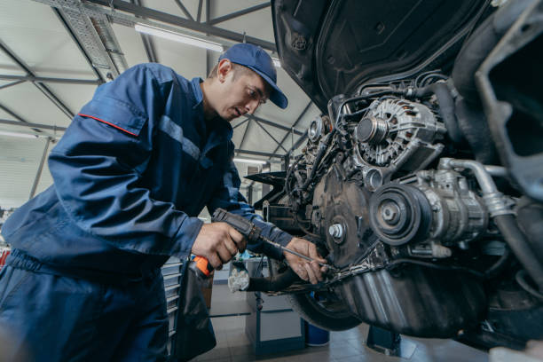

360 Diesel – Dependable Diesel Repair in Bryan
At 360 Diesel, the priority is delivering consistent, high-quality diesel services that keep vehicles running smoothly and efficiently. Known for reliable Diesel repair Bryan, the company focuses on providing practical, long-lasting solutions for a wide range of diesel engine issues.
Every repair is approached with attention to detail and a strong understanding of diesel systems. For vehicle owners searching for trusted Diesel engine repair bryan, 360diesel offers services designed to restore performance and maintain engine reliability over time.
Comprehensive Diesel Repair Services
Diesel engines require a specialized approach, and 360diesel is equipped to handle everything from routine servicing to more involved repairs. Each job begins with a detailed inspection to accurately identify the issue before any work begins.
Rather than applying short-term fixes, the focus is on resolving the core problem. This approach helps reduce the chances of recurring issues and ensures that engines continue to perform effectively.
As a trusted name for Diesel repair Bryan, 360diesel provides services that are both practical and results-driven.
Specialized Knowledge of Diesel Systems
Working with diesel engines requires a deep understanding of how these systems function. At 360diesel, every repair is carried out with specialized knowledge, ensuring that each component is handled correctly.
The process involves accurate diagnostics followed by targeted repairs, allowing issues to be addressed efficiently and effectively. This method helps maintain engine performance while preventing unnecessary wear.
For those in need of Diesel engine repair bryan, this level of expertise ensures that vehicles receive proper care.
Enhancing Performance and Efficiency
Maintaining engine performance is essential for both reliability and fuel efficiency. At 360diesel, services are designed to improve how diesel engines operate, ensuring they deliver consistent power without added strain.
Regular maintenance and timely repairs help extend the life of the engine while reducing the risk of unexpected breakdowns. This focus on performance makes 360diesel a dependable choice for Diesel repair Bryan.
By keeping engines operating efficiently, the company helps vehicle owners maintain reliable performance in everyday use.

Diagnostic-Focused Repair Process
Effective repairs begin with accurate diagnostics. At 360diesel, each service starts with a thorough evaluation to determine the exact cause of the issue.
This ensures that repairs are based on clear findings rather than assumptions. By addressing the source of the problem, the repair process becomes more efficient and delivers longer-lasting results.
For customers seeking Diesel engine repair bryan, this approach provides a dependable solution that minimizes repeated issues.
Long-Term Reliability as a Priority
At 360diesel, the goal is not only to fix current issues but also to support the long-term condition of diesel engines. Each repair is completed with care to ensure that the vehicle continues to operate reliably.
By focusing on long-term results, the company helps reduce the need for frequent repairs and supports consistent engine performance. This approach has made 360diesel a trusted provider of Diesel repair Bryan.
Serving a Range of Diesel Vehicles
Diesel engines are used in various types of vehicles, and 360diesel is prepared to handle a wide range of repair needs. Whether it is a personal vehicle or a work truck, the focus remains on delivering effective and consistent service.
Each vehicle is treated individually, ensuring that repairs match the specific requirements of the engine. This flexibility allows 360diesel to meet the needs of customers looking for Diesel engine repair bryan across different applications.
Commitment to High-Quality Work
Quality is a key part of every repair at 360diesel. Services are performed using proven techniques and dependable components to ensure consistent results.
Attention to detail is maintained throughout the entire process, from the initial inspection to the final check. This ensures that vehicles leave the shop in improved condition and ready for continued use.
For those searching for reliable Diesel repair Bryan, this commitment to quality provides confidence in every service.
Efficient Service with Reliable Results
Vehicle repairs can disrupt daily routines, which is why 360diesel focuses on completing work efficiently without compromising on quality.
Repairs are carried out using a structured process that ensures issues are fully resolved while minimizing downtime. This balance between speed and accuracy allows customers to return to their routine quickly.
As a trusted provider of Diesel engine repair bryan, 360diesel continues to deliver timely and effective solutions.
A Local Service You Can Rely On
360diesel is proud to serve the Bryan community by providing dependable diesel repair services. The company is built on reliability, professionalism, and a strong commitment to meeting the needs of local vehicle owners.
Understanding the demands placed on diesel engines in the area allows 360diesel to provide services that are both relevant and effective. This local focus has helped establish the company as a trusted option for Diesel repair Bryan.
Preventive Maintenance for Long-Term Performance
Regular maintenance plays an important role in keeping diesel engines operating efficiently. At 360diesel, the focus is on proactive service that helps prevent major issues before they develop.
By addressing smaller problems early, vehicle owners can avoid costly repairs and maintain consistent performance. This approach supports long-term reliability and helps extend the life of the engine.
For those in need of dependable Diesel engine repair bryan, this focus on maintenance provides lasting value.
360diesel – Your Diesel Repair Partner in Bryan
360diesel remains committed to providing professional diesel repair services that meet the needs of modern vehicle owners. With a focus on accuracy, efficiency, and long-term performance, the company delivers solutions that support both immediate repairs and ongoing maintenance.
Whether diagnosing an issue or performing routine service, 360diesel offers dependable support for those seeking Diesel repair Bryan. The goal is to ensure that every vehicle operates reliably and performs at its best.
With a strong commitment to quality and practical service, 360diesel continues to be a trusted choice for diesel repair in Bryan.